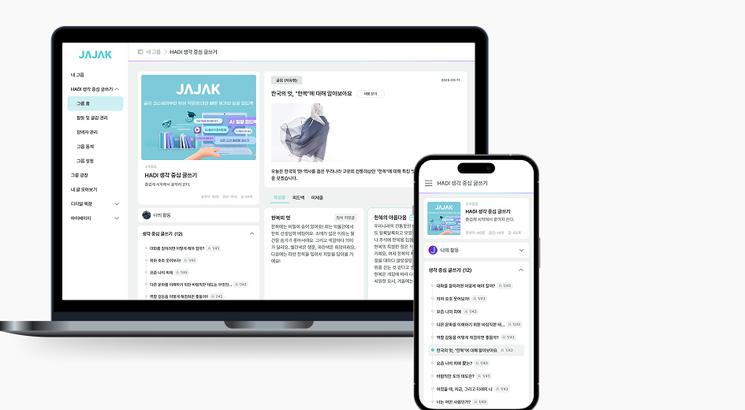
자작자작 : AI 글쓰기 교육 플랫폼
자작자작은 교사의 채점 효율성을 높이고 학생의 사고력과 작문 완성도를 향상시키는 웹 서비스입니다. (주요 고객: 30-40대 초등 교사, 초/중등 학생)
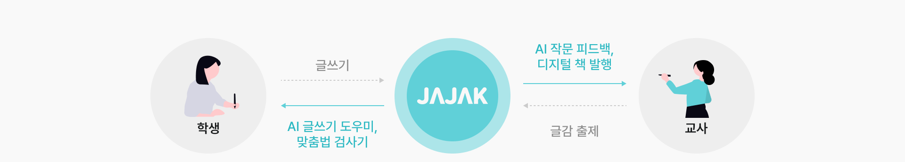
개인 사용자의 이탈을 막고, 최초 사용자의 학습 비용을 감소시킵니다.
VOC와 교육박람회 현장 피드백에서 반복된 "복잡하다"는 반응을 근거로, 이탈의 주요 원인을 최초 경험에서의 학습 비용으로 정의했습니다. 학습 비용을 줄이고 최초 태스크 완료율을 높여 초기 이탈을 막는 것을 목표로 설정했습니다. 이를 위해 학생/교사의 핵심 태스크 수행을 방해하는 UX 병목 3가지를 개선 대상으로 정의했습니다.
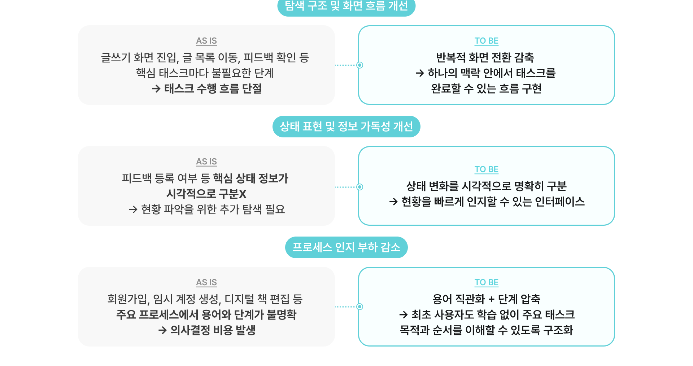
글쓰기, 피드백 화면의 낮은 가독성으로 핵심 정보가 잘 전달되지 않아요.
서비스 초기 이탈의 원인을 파악하기 위해, 핵심 사용자인 학생과 교사 두 그룹의 정성적 피드백을 수집했습니다. 그 결과 가독성 저하, 접근성 부족, 복잡한 프로세스 등 서비스 몰입을 방해하는 주요 VOC를 도출했습니다.
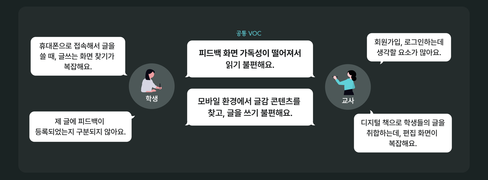
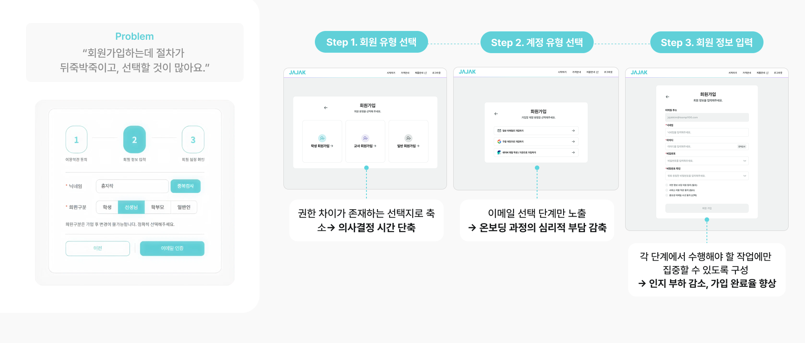
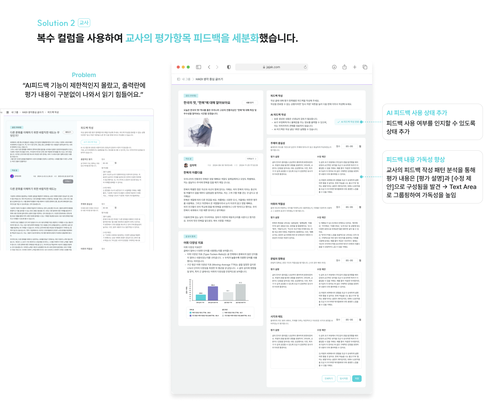
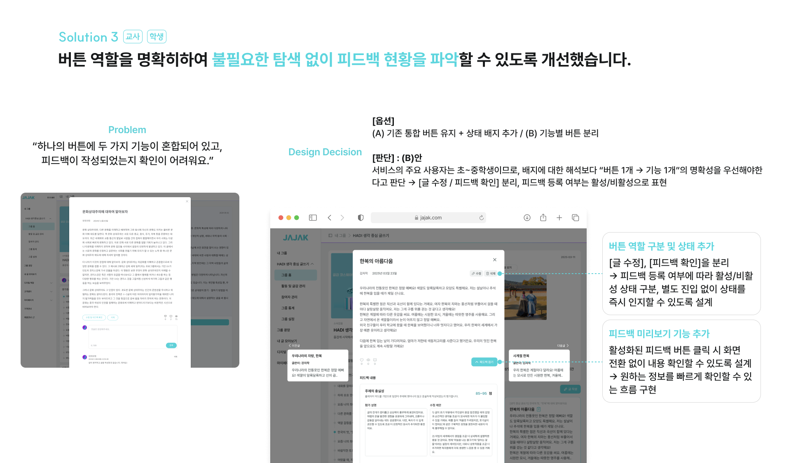
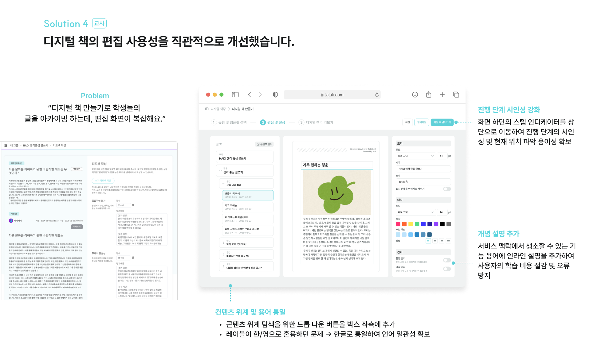
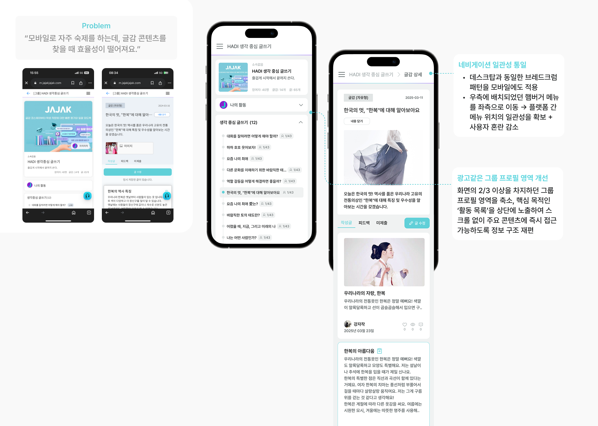
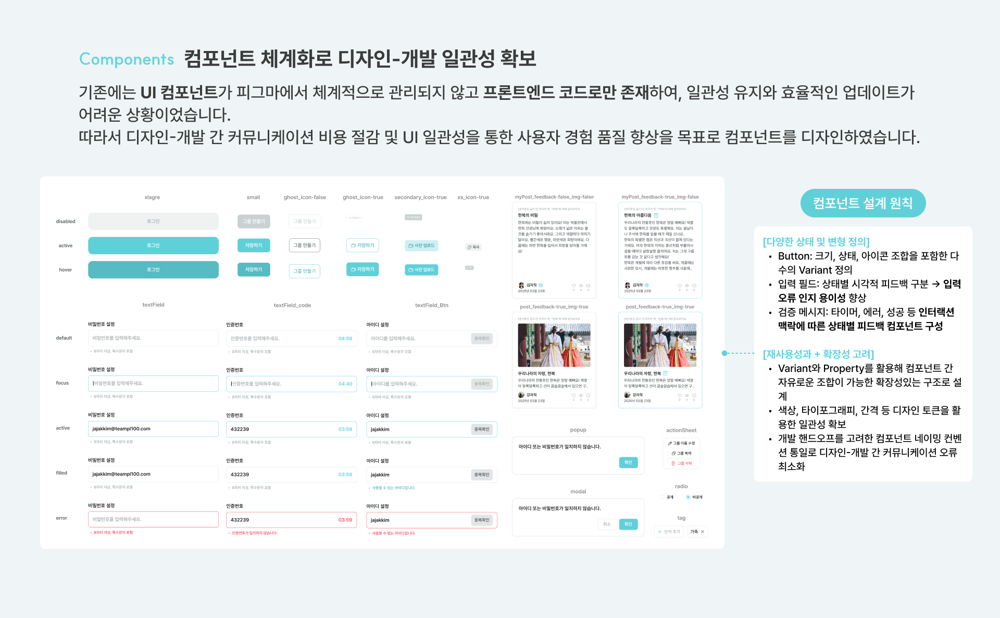
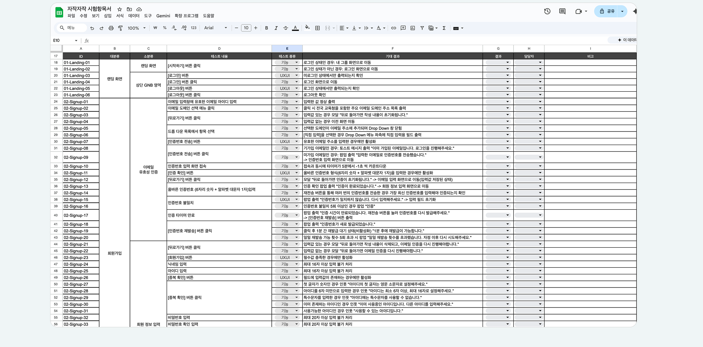
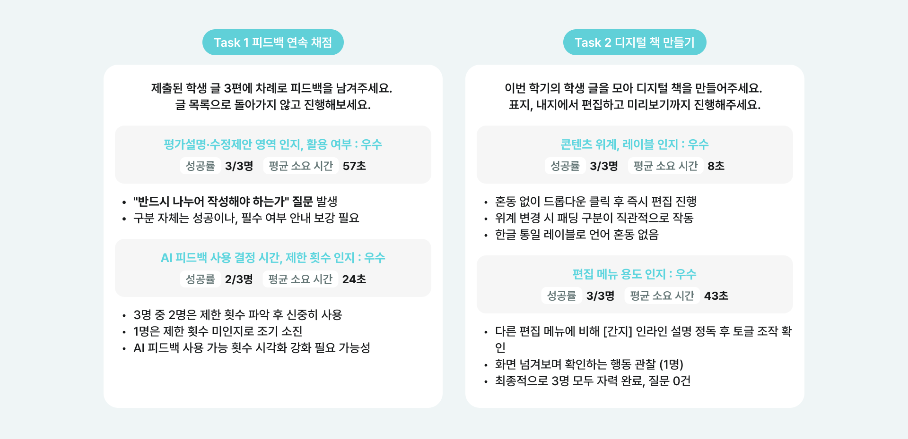
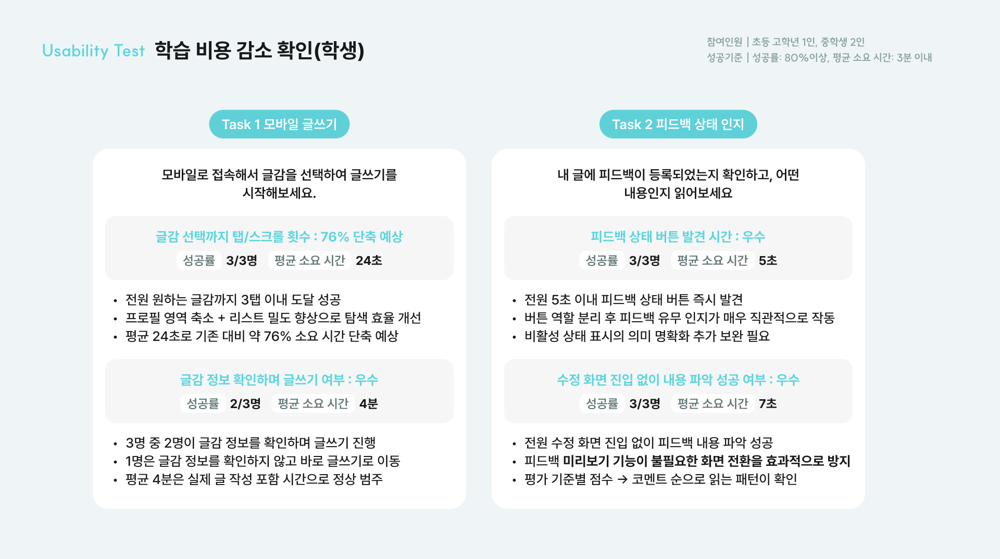
기존 유저의 사용성을 해치지 않으면서 신규 사용자의 학습 비용을 줄이는 서비스 개선 경험을 했습니다.
기존 IA의 복잡함을 해결하면서도, 장기 사용자의 학습된 경험을 존중하여 핵심 병목 지점을 선별적으로 개선하는 균형 감각을 익혔습니다.
교육박람회 현장에서 수집한 실제 유저의 의견과 VOC 데이터를 결합하여 서비스의 개선 방향성을 수립했습니다. 업데이트 배포 후 다시 현장 피드백을 확인하며 설계한 가설을 직접 검증하였고, 이 과정을 통해 유저의 입장을 깊이 고려하여 작업하는 유저 중심의 업무 방식을 체득할 수 있었습니다.
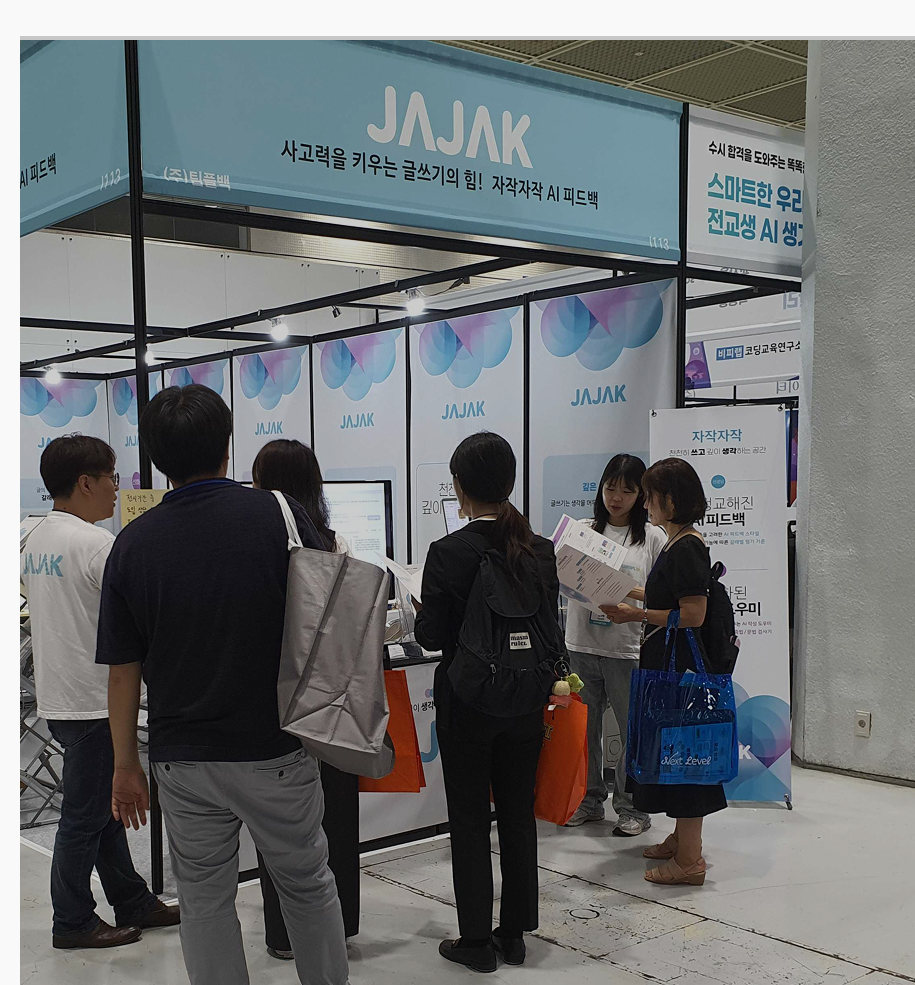